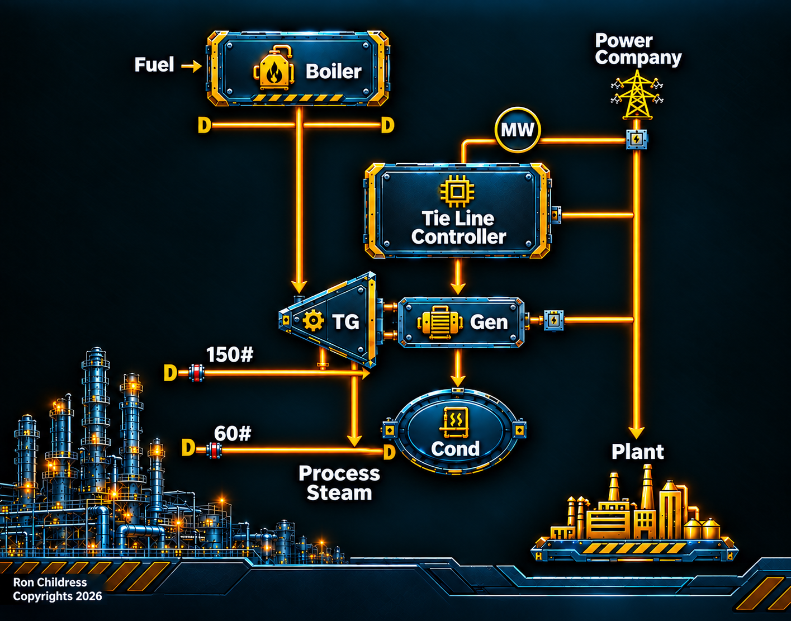
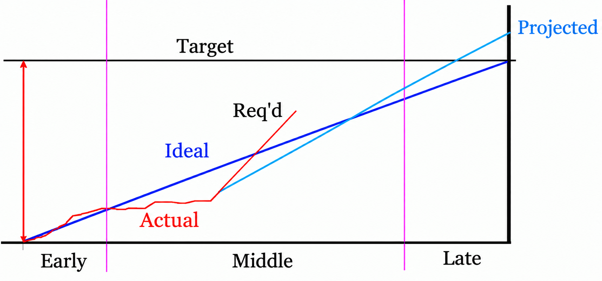

Energy markets create and close economic opportunities in minutes. Energy Advocate responds in seconds, continuously calculating your marginal cost to generate electricity internally and comparing it against the live market price, then autonomously deciding whether to buy, make, sell, or shed power. One paper mill reduced electrical costs by $50,000 per month from day one.
Request a Free Evaluation → All ServicesEnergy Advocate is not a scheduler or a setpoint calculator. It is a continuously running economic engine embedded in your control system, making and executing real decisions about your facility's energy position faster than any human operator can read the data that triggered them.
OptiMaxx continuously calculates your facility's real marginal cost to generate electricity internally - accounting for current fuel prices, boiler efficiencies at current load, turbine heat rates, condensing costs, and venting losses. This is not a static number. It updates every second as your process conditions change.
OptiMaxx retrieves current electricity market prices over the Internet in real time and compares them against your calculated internal generation cost. When the market is cheaper than making your own power, OptiMaxx buys. When making is cheaper, it maximizes your own generation. When the spread is marginal, it optimizes the blend.
Based on its economic calculation, OptiMaxx automatically drives condensing steam turbine generators to their optimum operating point - observing all applicable constraints simultaneously: emission limits, boiler limits, turbine and generator limits, and contractual obligations. Where economical, it vents steam to generate additional power with non-condensing generators, or includes gas turbines in the overall optimization.
OptiMaxx supports traditional interval demand tie-line control, instantaneous MW purchase control, and intelligent load-shedding - preventing new demand peaks or curtailing expensive power purchases by shedding only the minimum necessary loads from prioritized tables. This prevents demand charges without disrupting operations.
When a constraint prevents OptiMaxx from capturing a more economical position, it tells operators exactly why - in plain language. "Can't increase generation because boiler ID fan is at maximum." Daily constraint frequency distributions create a prioritized roadmap for equipment improvements that increases savings further over time.
OptiMaxx continuously compares your internal generation cost against the live market price and acts before any operator can read the data that triggered the decision.

OptiMaxx tracks performance across the billing interval - comparing actual accumulated demand against the ideal trajectory, the required trajectory, and the projected end-of-interval position. This gives operators an unambiguous view of whether the facility is on track to hit its cost target.

Available for installation in all modern distributed control and PLC systems or as a PC-based application interfacing to most control systems via industry standard communication protocols.
Our engineering team will assess your facility's specific dynamics and identify exactly what OptiMaxx can deliver - in documented financial terms, specific to your processes. No obligation. No sales pitch. Just numbers.